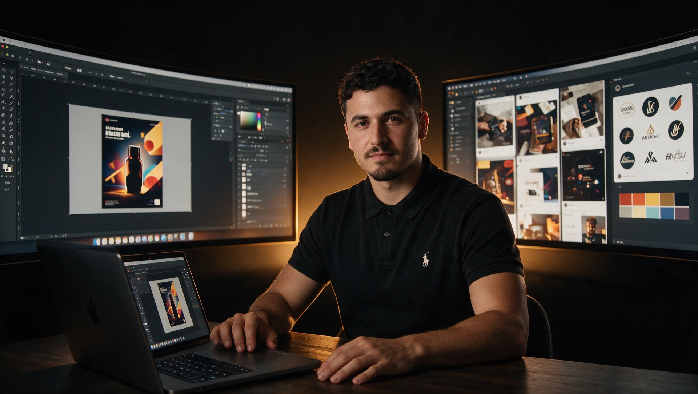
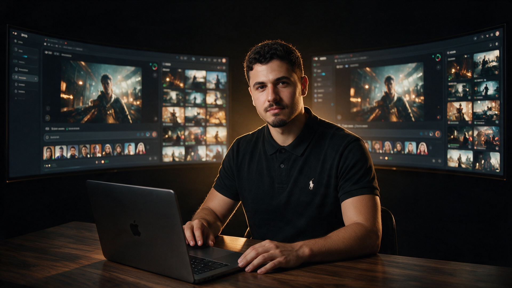
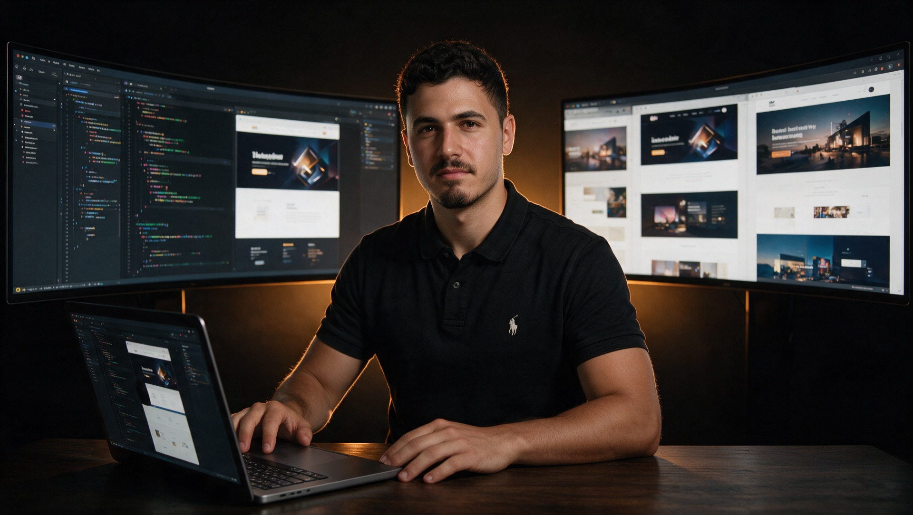
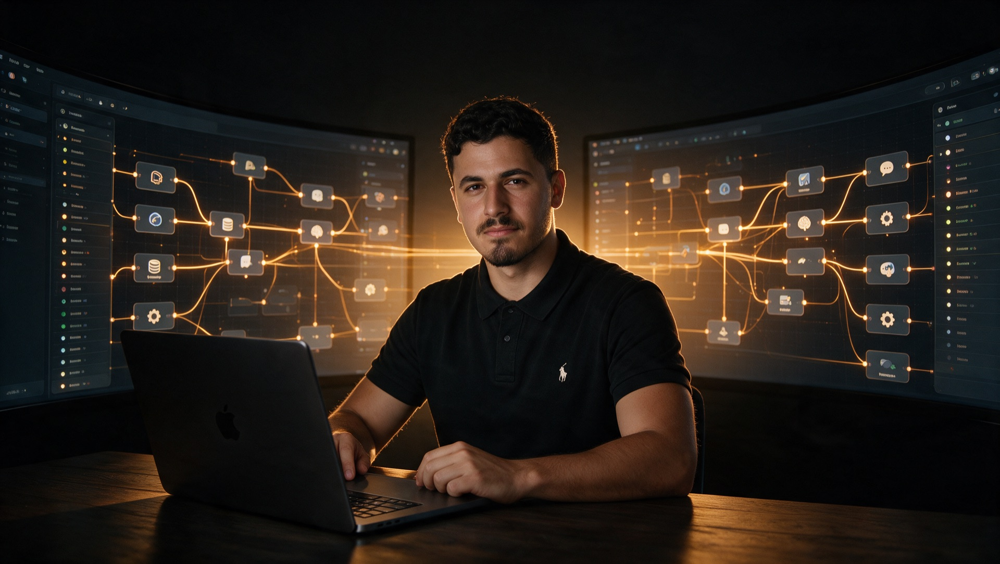

עומר ג'רבי, בן 24, בוגר עיצוב גרפי בשנקר ומומחה תוכן AI. אני יוצר תוכן ברמה הוליוודית לעסקים ומותגים — לצד שיווק דיגיטלי, בניית אתרים, עריכת וידאו ופודקאסטים, ופיתוח מערכות ואוטומציות בבינה מלאכותית. עבדתי מול חלק מהמותגים הגדולים במדינה, והבאתי אותם לתוצאה שנראית כמו הפקה מלאה — מהמחשב שלי בלבד.

בונה שפה חזותית שלמה — מיתוג, גרפיקות שיווקיות ופוסטרים ברמה מקצועית.
עורך ומרכיב סרטונים בטיימליין מקצועי — מקאט ועד קצב וסאונד.

מייצר תוכן AI ריאליסטי ברמה קולנועית — מהתסריט ועד הסצנה המוגמרת.
עורך ומערבב פודקאסטים — סאונד נקי, קצב זורם, הפקה שלמה.

בונה אתרים מאפס — מהקוד ועד חוויית משתמש מלוטשת.

מתכנן ובונה מערכות ואוטומציות AI שחוסכות זמן ועובדות לבד.
שיחה ראשונה חינם. תוך ימים — סרטון שנראה כמו הפקה שלמה.